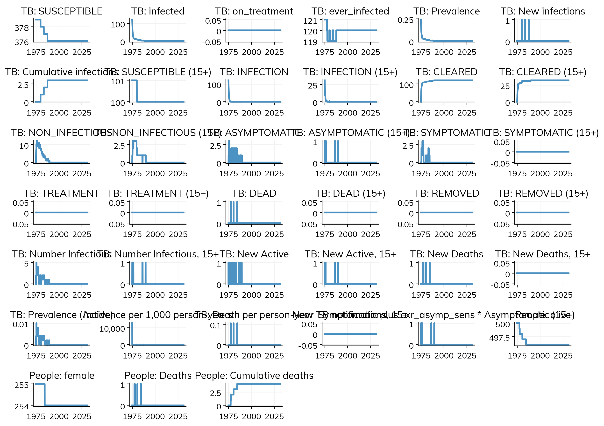
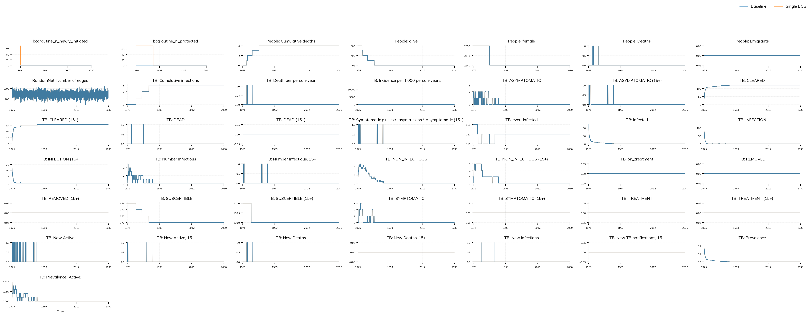
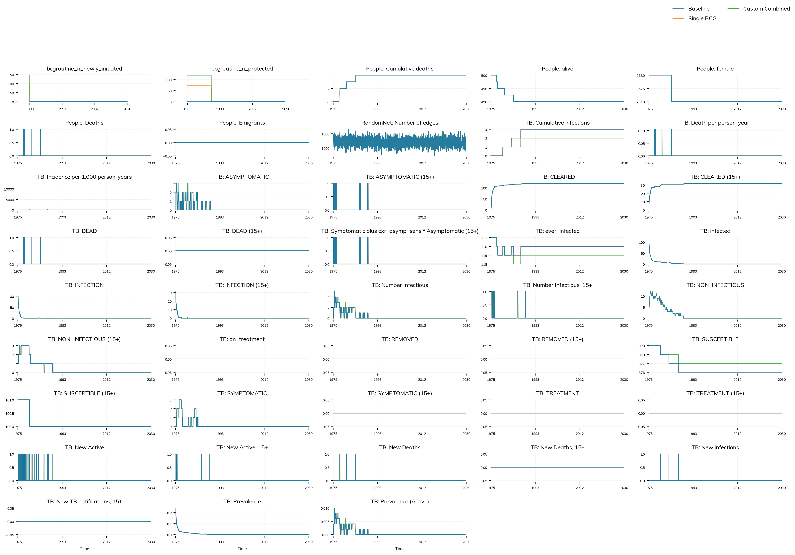

import tbsim
import starsim as ss
import sciris as sc
import matplotlib.pyplot as plt
import pandas as pd
import numpy as np
# Set up plotting
plt.style.use('default')
plt.rcParams['figure.figsize'] = (12, 8)
plt.rcParams['font.size'] = 12TB Interventions Tutorial
This notebook demonstrates how to create and run tuberculosis (TB) simulations with various interventions using the tbsim and starsim libraries. We’ll explore different intervention strategies including BCG vaccination and Tuberculosis Preventive Therapy (TPT).
Overview
In this tutorial, you will learn:
- Building TB simulations with intervention capabilities
- Defining different intervention scenarios (BCG, TPT, Beta changes)
- Running multiple scenarios and comparing results
- Visualizing intervention impacts on TB transmission
The tutorial is based on the run_tb_interventions.py script and provides a comprehensive introduction to TB intervention modeling.
Required Packages
First, let’s import the necessary libraries:
Default Parameters
Let’s define the default parameters for our simulations:
# Simple default parameters for simulation
DEFAULT_SPARS = dict(
dt=ss.days(7),
start=ss.date('1975-01-01'),
stop=ss.date('2030-12-31'),
rand_seed=123,
verbose=0,
)
# Default TB parameters
DEFAULT_TBPARS = dict(
beta=0.0025, # Use simple float value
init_prev=0.25, # Use simple float value
dt=ss.days(7),
start=ss.date('1975-02-01'),
stop=ss.date('2030-12-31'),
)
# Simple age distribution
age_data = pd.DataFrame({
'age': [0, 2, 4, 10, 15, 20, 30, 40, 50, 60, 70, 80],
'value': [20, 10, 25, 15, 10, 5, 4, 3, 2, 1, 1, 1] # Skewed toward younger ages
})
print("Default simulation parameters:")
for key, value in DEFAULT_SPARS.items():
print(f" {key}: {value}")
print("\nDefault TB parameters:")
for key, value in DEFAULT_TBPARS.items():
print(f" {key}: {value}")
print("\nAge distribution:")
print(age_data)Default simulation parameters:
dt: 7
start: 1975.01.01
stop: 2030.12.31
rand_seed: 123
verbose: 0
Default TB parameters:
beta: 0.0025
init_prev: 0.25
dt: 7
start: 1975.02.01
stop: 2030.12.31
Age distribution:
age value
0 0 20
1 2 10
2 4 25
3 10 15
4 15 10
5 20 5
6 30 4
7 40 3
8 50 2
9 60 1
10 70 1
11 80 1Building the Simulation Function
Now let’s create a function that builds a complete TB simulation with intervention capabilities:
def build_sim(scenario=None, spars=None):
"""
Build and return a complete Starsim-based simulation instance for TB modeling,
incorporating optional interventions and user-defined parameters.
Args:
scenario (dict, optional): A dictionary defining scenario-specific components,
such as intervention parameters and TB simulation settings.
spars (dict, optional): General simulation parameters.
Returns:
ss.Sim: A fully initialized simulation object
"""
scenario = scenario or {}
# Merge parameters
spars = {**DEFAULT_SPARS, **(spars or {})}
tbpars = {**DEFAULT_TBPARS, **(scenario.get('tbpars') or {})}
# Create interventions list
interventions = []
# Add BCG interventions (can be single or multiple)
bcg_params = scenario.get('bcgintervention')
if bcg_params:
if isinstance(bcg_params, dict):
# Single BCG intervention
interventions.append(tbsim.BCGRoutine(pars=bcg_params))
elif isinstance(bcg_params, list):
# Multiple BCG interventions
for i, params in enumerate(bcg_params):
params['name'] = f'BCG_{i}' # Give unique name
interventions.append(tbsim.BCGRoutine(pars=params))
# Add TPT interventions (can be single or multiple)
tpt_params = scenario.get('tptintervention')
if tpt_params:
if isinstance(tpt_params, dict):
# Single TPT intervention
interventions.append(tbsim.TPTSimple(pars=tpt_params))
elif isinstance(tpt_params, list):
# Multiple TPT interventions
for i, params in enumerate(tpt_params):
params['name'] = f'TPT_{i}' # Give unique name
interventions.append(tbsim.TPTSimple(pars=params))
# Add Beta interventions (can be single or multiple)
beta_params = scenario.get('betabyyear')
if beta_params:
if isinstance(beta_params, dict):
# Single Beta intervention
interventions.append(tbsim.BetaByYear(pars=beta_params))
elif isinstance(beta_params, list):
# Multiple Beta interventions
for i, params in enumerate(beta_params):
params['name'] = f'Beta_{i}' # Give unique name
interventions.append(tbsim.BetaByYear(pars=params))
# Create simulation components
pop = ss.People(n_agents=500, age_data=age_data)
tb = tbsim.TB(pars=tbpars)
networks = [
ss.RandomNet({'n_contacts': ss.poisson(lam=5), 'dur': 0})
]
# Create and return simulation
return ss.Sim(
people=pop,
networks=networks,
interventions=interventions,
diseases=[tb],
pars=spars,
)
print("Simulation builder function created successfully!")Simulation builder function created successfully!Defining Intervention Scenarios
Let’s create a function that defines different intervention scenarios:
def get_scenarios():
"""
Define a set of simulation scenarios for evaluating TB interventions.
Returns:
dict: A dictionary where each key is the name of a scenario and the value is
a dictionary of simulation parameters.
"""
return {
'Baseline': {
'name': 'No interventions',
'tbpars': dict(start=ss.date('1975-01-01'), stop=ss.date('2030-12-31')),
},
'Single BCG': {
'name': 'Single BCG intervention',
'tbpars': dict(start=ss.date('1975-01-01'), stop=ss.date('2030-12-31')),
'bcgintervention': dict(
coverage=0.8,
start=ss.date('1980-01-01'),
stop=ss.date('2020-12-31'),
age_range=[1, 5],
),
},
'TPT Intervention': {
'name': 'TPT intervention',
'tbpars': dict(start=ss.date('1975-01-01'), stop=ss.date('2030-12-31')),
'tptintervention': dict(
coverage=0.7,
start=ss.date('1990-01-01'),
stop=ss.date('2025-12-31'),
age_range=[15, 65],
),
},
'Beta Change': {
'name': 'Beta transmission rate change',
'tbpars': dict(start=ss.date('1975-01-01'), stop=ss.date('2030-12-31')),
'betabyyear': dict(
years=[1990, 2000],
x_beta=[0.5, 1.4]
)
},
}
# Display the scenarios
scenarios = get_scenarios()
print("Available scenarios:")
for name, scenario in scenarios.items():
print(f"\n{name}: {scenario['name']}")
if 'bcgintervention' in scenario:
print(f" - BCG intervention: {scenario['bcgintervention']}")
if 'tptintervention' in scenario:
print(f" - TPT intervention: {scenario['tptintervention']}")
if 'betabyyear' in scenario:
print(f" - Beta change: {scenario['betabyyear']}")Available scenarios:
Baseline: No interventions
Single BCG: Single BCG intervention
- BCG intervention: {'coverage': 0.8, 'start': <1980.01.01>, 'stop': <2020.12.31>, 'age_range': [1, 5]}
TPT Intervention: TPT intervention
- TPT intervention: {'coverage': 0.7, 'start': <1990.01.01>, 'stop': <2025.12.31>, 'age_range': [15, 65]}
Beta Change: Beta transmission rate change
- Beta change: {'years': [1990, 2000], 'x_beta': [0.5, 1.4]}Running a Single Scenario
Let’s start by running a single baseline scenario to understand the basic simulation:
# Run baseline scenario
print("Running baseline scenario...")
baseline_scenario = scenarios['Baseline']
baseline_sim = build_sim(scenario=baseline_scenario)
baseline_sim.run()Running baseline scenario...Sim(n=500; 1975.01.01—2030.12.31; networks=randomnet; diseases=tb)Exploring Baseline Results
Let’s examine the baseline simulation results:
# Get baseline results
baseline_results = baseline_sim.results.flatten()
# Display available result keys
print("Available result metrics:")
for key in baseline_results.keys():
print(f" - {key}")
# Show some key metrics
print("\nKey TB metrics:")
tb_metrics = [key for key in baseline_results.keys() if 'tb' in key.lower()]
for metric in tb_metrics[:10]: # Show first 10 TB metrics
value = baseline_results[metric]
if hasattr(value, '__len__') and len(value) > 0:
print(f" {metric}: {value[-1]:.3f} (final value)")
else:
print(f" {metric}: {value}")Available result metrics:
- randomnet_n_edges
- tb_n_susceptible
- tb_n_infected
- tb_n_on_treatment
- tb_n_ever_infected
- tb_prevalence
- tb_new_infections
- tb_cum_infections
- tb_n_susceptible_15+
- tb_n_infection
- tb_n_infection_15+
- tb_n_cleared
- tb_n_cleared_15+
- tb_n_non_infectious
- tb_n_non_infectious_15+
- tb_n_asymptomatic
- tb_n_asymptomatic_15+
- tb_n_symptomatic
- tb_n_symptomatic_15+
- tb_n_treatment
- tb_n_treatment_15+
- tb_n_dead
- tb_n_dead_15+
- tb_n_removed
- tb_n_removed_15+
- tb_n_infectious
- tb_n_infectious_15+
- tb_new_active
- tb_new_active_15+
- tb_new_deaths
- tb_new_deaths_15+
- tb_prevalence_active
- tb_incidence_kpy
- tb_deaths_ppy
- tb_new_notifications_15+
- tb_n_detectable_15+
- n_alive
- n_female
- new_deaths
- new_emigrants
- cum_deaths
Key TB metrics:
tb_n_susceptible: 376.000 (final value)
tb_n_infected: 0.000 (final value)
tb_n_on_treatment: 0.000 (final value)
tb_n_ever_infected: 120.000 (final value)
tb_prevalence: 0.000 (final value)
tb_new_infections: 0.000 (final value)
tb_cum_infections: 3.000 (final value)
tb_n_susceptible_15+: 100.000 (final value)
tb_n_infection: 0.000 (final value)
tb_n_infection_15+: 0.000 (final value)Plotting Baseline Results
Let’s create some basic plots to visualize the baseline TB dynamics:
baseline_sim.plot()Figure(1200x900)
Running Multiple Scenarios
Now let’s run multiple scenarios to compare the effects of different interventions:
def run_scenarios(scenario_names=None, plot=True):
"""Run multiple scenarios and optionally plot results."""
all_scenarios = get_scenarios()
if scenario_names is None:
scenario_names = ['Baseline', 'Single BCG', 'TPT Intervention']
results = {}
for name in scenario_names:
if name in all_scenarios:
print(f"\nRunning: {name}")
scenario = all_scenarios[name]
sim = build_sim(scenario=scenario)
sim.run()
results[name] = sim.results.flatten()
else:
print(f"Warning: Scenario '{name}' not found")
if plot:
tbsim.plot(results)
return results
# Run selected scenarios
selected_scenarios = ['Baseline', 'Single BCG']Creating Comparison Plots
Let’s create a function to compare results across different scenarios:
results = run_scenarios(selected_scenarios, plot=True)
# print(f"\nCompleted {len(results)} scenarios successfully!")
Running: Baseline
Running: Single BCG
Intervention Impact Analysis
Let’s analyze the impact of interventions by calculating key metrics:
def analyze_intervention_impact(results):
"""Analyze the impact of interventions compared to baseline."""
if 'Baseline' not in results:
print("Warning: Baseline scenario not found for comparison")
return
baseline = results['Baseline']
print("Intervention Impact Analysis (compared to Baseline):")
print("=" * 60)
for name, result in results.items():
if name == 'Baseline':
continue
print(f"\n{name}:")
# Compare final prevalence
if 'tb_prevalence' in result and 'tb_prevalence' in baseline:
baseline_final = baseline['tb_prevalence'][-1]
intervention_final = result['tb_prevalence'][-1]
reduction = ((baseline_final - intervention_final) / baseline_final) * 100
print(f" Final TB Prevalence: {intervention_final:.3f} (vs {baseline_final:.3f})")
print(f" Prevalence Reduction: {reduction:.1f}%")
# Compare cumulative deaths
if 'tb_deaths' in result and 'tb_deaths' in baseline:
baseline_deaths = np.sum(baseline['tb_deaths'])
intervention_deaths = np.sum(result['tb_deaths'])
death_reduction = ((baseline_deaths - intervention_deaths) / baseline_deaths) * 100
print(f" Total TB Deaths: {intervention_deaths:.0f} (vs {baseline_deaths:.0f})")
print(f" Death Reduction: {death_reduction:.1f}%")
# Compare average incidence
if 'tb_incidence' in result and 'tb_incidence' in baseline:
baseline_avg_incidence = np.mean(baseline['tb_incidence'])
intervention_avg_incidence = np.mean(result['tb_incidence'])
incidence_reduction = ((baseline_avg_incidence - intervention_avg_incidence) / baseline_avg_incidence) * 100
print(f" Average Incidence: {intervention_avg_incidence:.3f} (vs {baseline_avg_incidence:.3f})")
print(f" Incidence Reduction: {incidence_reduction:.1f}%")
# Run the analysis
analyze_intervention_impact(results)Intervention Impact Analysis (compared to Baseline):
============================================================
Single BCG:
Final TB Prevalence: 0.000 (vs 0.000)
Prevalence Reduction: nan%/tmp/ipykernel_549911/3857901492.py:23: RuntimeWarning:
invalid value encountered in scalar divide
Advanced: Custom Scenario Creation
Let’s create a custom scenario to demonstrate how to define your own interventions:
# Create a custom scenario with multiple interventions
custom_scenario = {
'name': 'Combined BCG + TPT + Beta Reduction',
'tbpars': dict(
start=ss.date('1975-01-01'),
stop=ss.date('2030-12-31'),
beta=0.0020 # Lower baseline transmission
),
'bcgintervention': dict(
coverage=0.85,
start=ss.date('1980-01-01'),
stop=ss.date('2020-12-31'),
age_range=[0, 5],
),
'betabyyear': dict(
years=[1990, 2000, 2010],
x_beta=[0.8, 0.6, 0.4] # Gradual reduction in transmission
)
}
print("Custom scenario created:")
print(f" Name: {custom_scenario['name']}")
print(f" BCG coverage: {custom_scenario['bcgintervention']['coverage']}")
print(f" Beta reduction: {custom_scenario['betabyyear']['x_beta']}")
# Run the custom scenario
print("\nRunning custom scenario...")
custom_sim = build_sim(scenario=custom_scenario)
custom_sim.run()
custom_results = custom_sim.results.flatten()
print("Custom scenario completed!")
# Add to results for comparison
results['Custom Combined'] = custom_results
tbsim.plot(results, n_cols=5)Custom scenario created:
Name: Combined BCG + TPT + Beta Reduction
BCG coverage: 0.85
Beta reduction: [0.8, 0.6, 0.4]
Running custom scenario...
Custom scenario completed!

Summary and Key Takeaways
In this tutorial, we’ve learned how to:
- Build TB simulations with intervention capabilities using
tbsimandstarsim - Define different intervention types:
- BCG vaccination: Reduces TB transmission and severity
- TPT (Tuberculosis Preventive Therapy): Prevents progression from latent to active TB
- Beta changes: Modifies transmission rates over time
- Run multiple scenarios and compare their impacts
- Analyze intervention effectiveness through key metrics like prevalence, incidence, and mortality
- Create custom scenarios with multiple interventions
Key Findings:
- BCG vaccination shows significant impact on reducing TB prevalence, especially when targeting young children
- TPT interventions can be effective in reducing TB incidence and mortality
- Combined interventions often provide the best outcomes
- Transmission rate modifications (beta changes) can simulate public health measures or environmental changes
Next Steps:
You can extend this tutorial by: - Exploring different parameter combinations - Adding more complex intervention scenarios - Incorporating additional comorbidities (HIV, malnutrition) - Analyzing cost-effectiveness of interventions - Running sensitivity analyses on key parameters
References and Further Reading
- tbsim documentation: For detailed API reference and advanced features
- starsim documentation: For general simulation framework capabilities
- TB modeling literature: For epidemiological context and validation
- Intervention studies: For real-world intervention effectiveness data
This tutorial provides a foundation for TB intervention modeling that can be adapted for specific research questions and policy analysis.